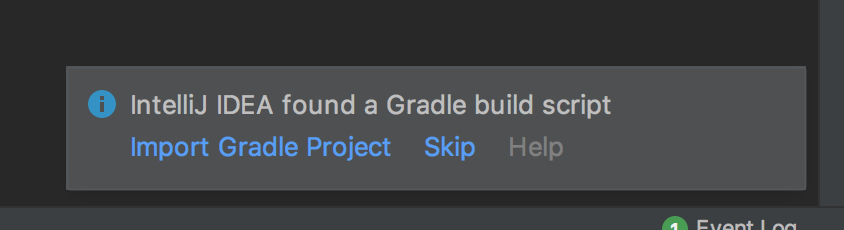
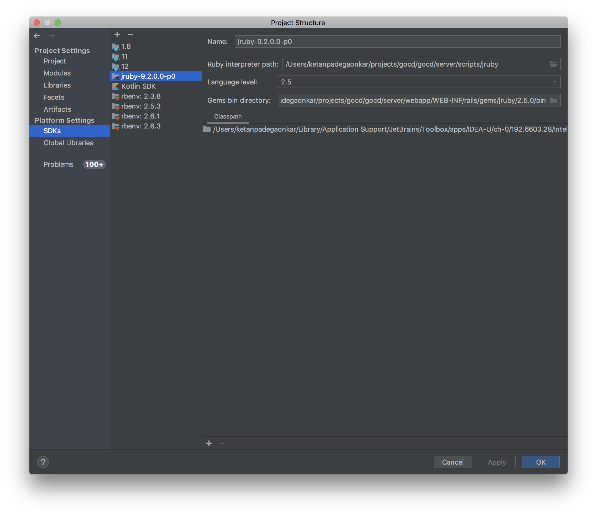
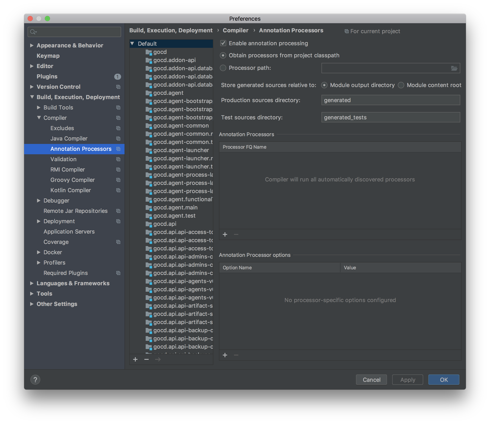
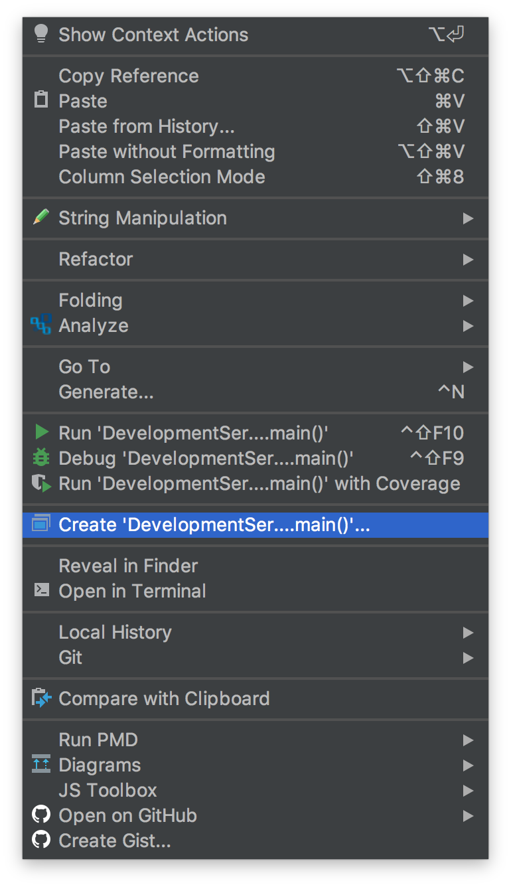
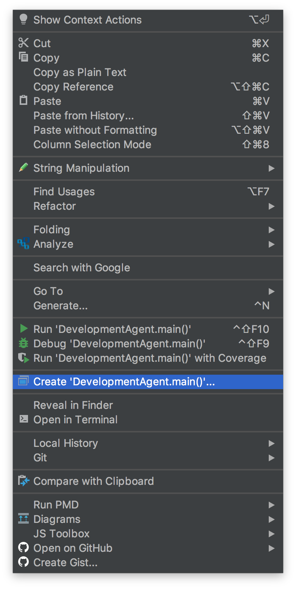
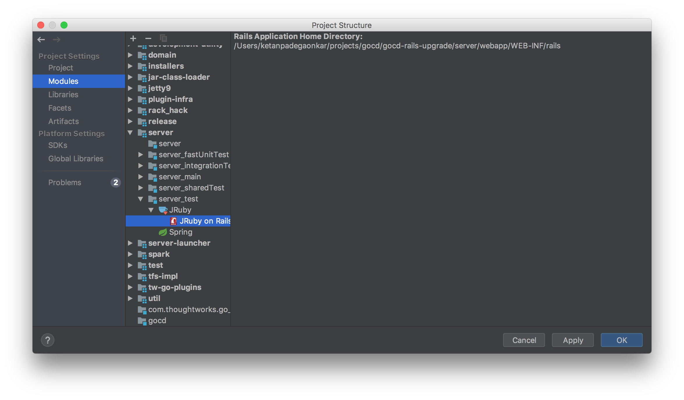

GoCD Developer Documentation
This documentation should allow you to setup your development environment to work on the codebase for GoCD, a free and open-source Continuous Delivery server.
Setting up your development environment
Step 1: Get the code and run a local build
Use docker image
@tomzo maintains a docker image which can be used to build and test GoCD without installing all tools on the local host. If you have a local docker daemon, consider using the image. The image uses the same tools which run on https://build.gocd.org GoCD agents, therefore it is consistent with the upstream requirement.
Manual setup
GoCD requires the following software packages to build
- Git >= 2.20 (https://git-scm.com/downloads)
- 64-bit JDK 17+ (We recommend downloading an Eclipse Temurin build from Adoptium)
- NodeJS >= 16 (https://nodejs.org/en/download/)
- Yarn v1 package manager
- Generally,
npm install -g yarnwill suffice; otherwise, see https://yarnpkg.com/en/docs/install
- Generally,
- C/C++ build toolchain: certain
nodepackages might need to build native extensions
For Mac Users
Homebrew is the easiest way to install the prerequisite packages
brew install git yarn temurin17 nodejs
For more control over versions; a generic version manager such as ASDF is a good choice. GoCD includes a .tool-versions to install precise versions.
brew install git yarn
asdf install # Installs JDK, NodeJS and JRuby to make interacting with Gemfiles easier
For Windows Users
The easiest way to get the prerequisite packages is by using Chocolatey
From an elevated command prompt run the following commands:
choco install git
choco install nodejs-lts
choco install yarn # alternatively, npm install -g yarn
Also ensure that your JAVA_HOME environment variable is pointing to the 64-bit version (i.e. it is in "Program Files" and not "Program Files (x86)")
Clone the repository
The main repository is: https://github.com/gocd/gocd
It is highly recommended to fork the main repository and clone your fork for development. You can then add the main repository as an upstream remote:
# Assuming your github username is `developer-extraordinaire`, clone your forked repo
git clone https://github.com/developer-extraordinaire/gocd
cd gocd
# Add the main repo as the remote `upstream`
git remote add upstream https://github.com/gocd/gocd
To pull changes from upstream into your local development branches:
git fetch upstream
git merge upstream/master # alternatively, you can rebase instead
Validate that you can build the zip installers
Execute the following commands to build GoCD server and agent installers:
$ unset GEM_HOME GEM_PATH # if you're using rvm
$ ./gradlew clean agentGenericZip serverGenericZip
After a successful build, the ZIP installers for GoCD Server and GoCD Agent are outputted to installers/target/distributions/zip/
$ ls installers/target/distributions/zip/
go-agent-16.7.0-3795.zip go-server-16.7.0-3795.zip
Compiled bytecode and other build artifacts can be found in each module's target/ subdirectory:
$ find . -name target -type d
./addon-api/database/target
./agent/target
...
./tfs-impl/target
./util/target
If all went well, you should be in good shape to set up your IDE.
Step 2: Setup IntelliJ
The core team use IntelliJ IDEA as the IDE for GoCD development (at least for Java code and related derivatives). If you use another IDE, it will be up to you to figure out a working configuration based off of these instructions. Either the the Community Edition or the paid Ultimate edition will work.
For TypeScript, JavaScript, Sass, Ruby, and other parts, some of us use other editors, such as Visual Studio Code, Sublime Text, Vim, Emacs, etc. That is completely optional.
Prior to importing a GoCD project in IntelliJ IDEA, one needs to build some prerequisite code to prepare one's working directory. This is done with the following command -- it may take a few minutes to run the first time, so maybe go grab a coffee :)
$ ./gradlew clean prepareAfter the preparation phase has succeeded, open the project in IDEA by opening the
build.gradlefile in the top level of the working directory and choosing to "Open as Project".At this point, IntelliJ IDEA is probably prompting you if you want to import the project using gradle. Click Import Gradle Project.

Open project settings.
Select the latest JDK that is installed

OPTIONAL for IDEA Ultimate Edition: Setup a JRuby SDK (use
$GOCD_HOME/server/scripts/jruby) as the JRuby binary (Ruby support is only available to Ultimate Edition users)
Open Gradle Settings
- Use the same JDK that you are using with the project.

Install the Lombok IntelliJ plugin
Find
Lombokin the plugin settings and install it
More info here https://projectlombok.org/setup/intellij
- Restart IntelliJ IDEA after installing Lombok
Configure annotation processing
- The Lombok plugin will prompt you to setup an annotation processor
- Enable annotation processing, setting IDEA to obtain processors from the project classpath (the default setting)

Configure a default JUnit template
- For Java 16+ compatibility, GoCD server requires certain JDK packages to have internals opened for access due to the way it was originally designed. The Gradle configurations will do this automatically when running tests against the server, however if you choose to run test tests using IntelliJ IDEA itself, you will find tests failing with accessibility errors. To make each JUnit configuration start with the required access you can edit the default template:
- Open
Run -> Edit configurations... - Click
Edit Configuration Templates...and find theJUnitdefault configuration - In the VM Options box with
-ea, add--add-opens=java.base/java.lang=ALL-UNNAMED --add-opens=java.base/java.util=ALL-UNNAMED. For the most up-to-date list of required opens, refer to the JvmModuleOpensArgs within the server Gradle config here. - After this, each JUnit run configuration that is manually or dynamically created should have the necessary configuration to work without issue.
2.1: Running the Development Server via IntelliJ IDEA
- Open the class
DevelopmentServer Right click and select Create 'DevelopmentServer.main()'

Configure the DevelopmentServer JVM args (
-Xmx2g) and working dir (server)
2.2: Running Development Agent via IntelliJ IDEA
- Open the class
DevelopmentAgent Right click and select Create 'DevelopmentAgent.main()'

Configure the DevelopmentAgent working dir
agent
Step 3: Running tests
3.1: Pre-requisites for Java/Server tests
Manual setup
Running the Java tests requires some additional dependencies, mainly for SCM tools used to validate integrations of materials.
- Subversion
- Mercurial
- Perforce Client (
2022.1+) & Helix Core Server (2022.1specific version version required)
For Mac Users
Homebrew is the easiest way to install the additional packages
brew install subversion mercurial p4
Install the Perforce Helix Core server - this is currently a bit of a pain and has to be done manually.
The below will put it in /usr/local/bin on the assumption that folder is on your PATH already.
P4D_VERSION=22.1
curl --fail --location "https://cdist2.perforce.com/perforce/r${P4D_VERSION}/bin.macosx1015x86_64/helix-core-server.tgz" -O
tar xvf helix-core-server.tgz --directory /usr/local/bin --include p4d
rm helix-core-server.tgz
For Windows Users
The easiest way to get the additional packages is by using Chocolatey
From an elevated command prompt run the following commands:
choco install svn
choco install hg
choco install p4
Install the Perforce Helix Core server
- Download https://cdist2.perforce.com/perforce/r22.1/bin.ntx64/helix-core-server-x64.exe
- Install it.
- You don't need to install the client and can uncheck its box, since you installed with Choco above
- It will create a service and ask you for a repository root folder. I'd suggest putting it somewhere you don't care about and
then disabling the service. GoCD's tests don't need
p4dto be running or rely on this root folder - they only need the binary to be available on thePATHwhich the installer does for you.
3.2: Running Java/Server tests from the command line
As GoCD is a multi-project Gradle setup, there are many combinations you can run. However some common ones are:
./gradlew allTests # All the quicker tests across projects. Excludes server integration tests.
./gradlew server:fastUnitTests # Only the quicker unit tests for the server
./gradlew server:integrationTest # The server slow integration tests
./gradlew common:test --tests P4MaterialTest # Example filtering for a specific test
3.3: Running JRuby/Rails RSpec tests from the command line
Here are some RSpec specific commands you may find useful —
./gradlew rspec # run all specs, with default arguments
./gradlew rspec -Popts='--pattern spec/**/api_v**/*_spec.rb' # to run api specs
./gradlew rspec -Popts='--pattern spec/controllers' # to run controller specs
./gradlew rspec -Popts='--pattern spec/foo/bar_spec.rb' # to run a single spec
It's probably quicker to run the RSpec tests from the command line instead of gradle:
cd server/webapp/WEB-INF/rails
../../../scripts/jruby -S rspec
../../../scripts/jruby -S rspec --pattern 'spec/**/api_v**/*_spec.rb' # to run api specs
../../../scripts/jruby -S rspec --pattern spec/controllers # to run controller specs
../../../scripts/jruby -S rspec --pattern spec/foo/bar_spec.rb # to run a single spec
3.3b: [OPTIONAL for Ultimate Edition] Running JRuby/Rails RSpec tests from IntelliJ IDEA Ultimate Edition
Ensure that your project module "server>server_test" is setup properly.
- Click "File menu > Project Structure"
- Select "Modules" in the "Project Structure" dialog
Navigate to "server>server_test" and right-click to add "JRuby" (select the right jruby version). Then right click to add "JRuby on Rails"


Configure the default RSpec run configuration
- Open
Run -> Edit configurations... - Click
Edit configuration templates...and find theRSpecdefault configuration - Check the
Use custom RSpec runner scriptcheckbox - Select
rspecfrom<project-directory>/server/scripts/jruby/rspec - Set the working directory to
<project-directory>/server/webapp/WEB-INF/rails - Set the
Ruby SDKoption toUse other SDK and 'rspec' gemwith the dropdown set to the correct version of JRuby that you configured above, e.gjruby-9.2.0.0
- Click
Applyto save - Open a spec file and run it
Run -> Run 'somefile_spec.rb', orCtrl+Shift+F10
- Open
3.4: Working on TypeScript/Webpack single page apps
If you're working on some of the newer pages in GoCD (almost everything exception stage/job details pages), this will watch your filesystem for any JS changes you make and keep compiling the JS in the background. This usually takes a couple of seconds to compile, after you hit save.
# forking in a subshell won't change the directory after interrupting/exiting
$ (cd server/src/main/webapp/WEB-INF/rails && yarn run webpack-watch)
3.5: Running Javascript tests
To run javascript tests —
In development environment (very quick)
Visit the following URLs:
- http://localhost:8153/go/assets/webpack/_specRunner.html (Most pages use MithrilJS 1.0). Ensure that you are running the webpack watcher to have changes reflected.
In order to run old/"legacy" raw javascript specs through browser, run following command to start server -
$ ./gradlew jasmineOldServer
Open a browser and navigate to http://localhost:8888/
In CI environment (very slow for running tests after every change)
$ ./gradlew jasmine